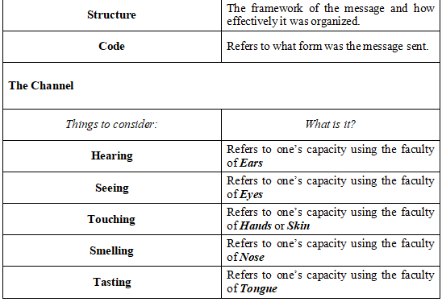

Welcome to your first lesson on Oral communication. For this subject, you’ll learn various things that deal with communication. From its definition, types, models, components, and a lot more. Are you ready for it? Let’s get started with the basics.
Communication: Its Nature and Processes
They say the no man is an island. Do you believe in this adage? Do you believe that it is innate for you to be with someone? I say “YES!” You need to build a connection with others to be able to survive. And to be able to build that connection you must communicate! The question is, do you know what is communication? Let’s have it hand in hand.
Communication came from the word Communicare. It is a loan Latin word that means “To Share” or “To Make Common.” It is defined as the exchange of ideas from one person to another. This means that, through communication, you can share thoughts, feelings, or even a reaction or response to something that was given to you.
That is how often you use communication. However, despite your frequent use of communication, do you know what the process of communication is? To be able to communicate we go through a certain process. The simplest process of communication is composed of several components. These are Sender, Message, a Channel, Receiver, and Feedback. Since it is a process, there a flow that needs to be followed.
Let’s take it one by one,
Sender
Serves as the source or the topic to communicate. He/she is the one who conceptualizes, formalizes, and organizes the idea that he/she wants to communicate. He/she is also called the Encoder
Message
The final concept of the idea formulated by the sender. The thought or the idea that is being communicated.
Channel
Known as the platform as to where is the sound waves from the sender will flow towards the receiver of the message.
Receiver
The person with whom the sender is communicating. He/she receives the message and decodes it. That is why he/she is also called the Decoder.
Feedback
The message sent by the receiver which serves as the response to the message that was sent to him/her.
As you can see, the communication process can be viewed as a cycle. This means that each role is very flexible. The receiver can now become the sender and vice versa.
The first figure shows you the simplest process of communication. Hence, several proponents developed various models of communication. Are you familiar with them? Let us see as we get to know them more on our next topic, The Communication Models.
Communication Models are graphic representations of the proposed elements included in the communication process. Some of the earliest communication model proponents are Lasswell, Shannon and Weaver, Schramm, Berlo, and Barnund,
Lasswell’s Communication Model
Laswell Communication Model was developed by Harold Lasswell, who is a communication theorist. He drafted his model by formulating questions as to who and what should be in the process.
The first question asks, “Who?” This aims to determine who is going to be the sender, communicator of the process.
The second question is “Say what?” This part of the process aims to determine what is going to be the message or the topic of the communication.
The third is “In Which Channel?” At this stage, you are going to determine how or in what way is the message being delivered.
The fourth question is “To Whom?” In this part of the process, you are now going to know who the recipient of the message is.
The fifth and last question is “With What Effect?” This part seeks for the outcome that may happen after the message was delivered.
Shannon & Weaver’s Communication Model
Shannon and Weaver’s model was developed by Claude Elwood Shannon. This model is very similar to Lasswell’s model; however, you can see from the figure above that some other elements were added. Let us know each element one by one. First, the Information source, this serves as the one that decides what message to say. Second is the Message which refers to the actual thought/idea being sent. The third is the Transmitter. This pertains to the encoder that converts messages to signals transmitted to cables. This can also be defined as the material used in delivering a message. Fourth is Signals. Signals are the electrical impulse or radio wave that carries the message.
Upon the transmission of the message, the fifth element may occur. It is Noise that is seen as the physical distraction that may interrupt the flow of the message. Fifth element is the Receiver. The receiver from Lasswell’s model differs from the receiver from this model.
If in Lasswell the receiver is the final destination of the message, here in Shannon-Weaver receiver is the decoder of signals into a message comprehensible for the receiver.
This also pertains to what material will receive the message. The final element of this model is the Destination. It is known to be the recipient of the model.
Schramm’s Model of Communication
Schramm’s model of communication was developed by Wilbur Schramm. He is the founder of the Institute of Communication Research at the University of Illinois and Stanford University. Unlike Shannon&Weaver’s Model which specifies every element of communication, this model views communication as a continuous process where initially, the sender will also act as the encoder and the receiver will act as the decoder. On the other hand, the message is still the thought or idea being discussed in the communication.
Berlo’s SMCR Model of Communication
Berlo’s SMCR Model was developed by David Berlo. He was a student of Wilbur Schramm and was known as one of the founding fathers of mass communication. In this model, Berlo emphasizes the importance of the relationship between the encoder and the decoder. He also reiterates the importance of the efficiency of the communication process that can be achieved through the consideration of sub-elements of every part of the process.

Barnlund’s Model of Communication
Barnlund’s model was developed by Dean C. Barnlund. He authored several books in communication, and he also addressed the linear model of communication by developing his Transactional model of communication. He states that communication is a “Complex and Dynamic process.” He emphasizes the importance of the sender and receiver coming up with mutual meanings